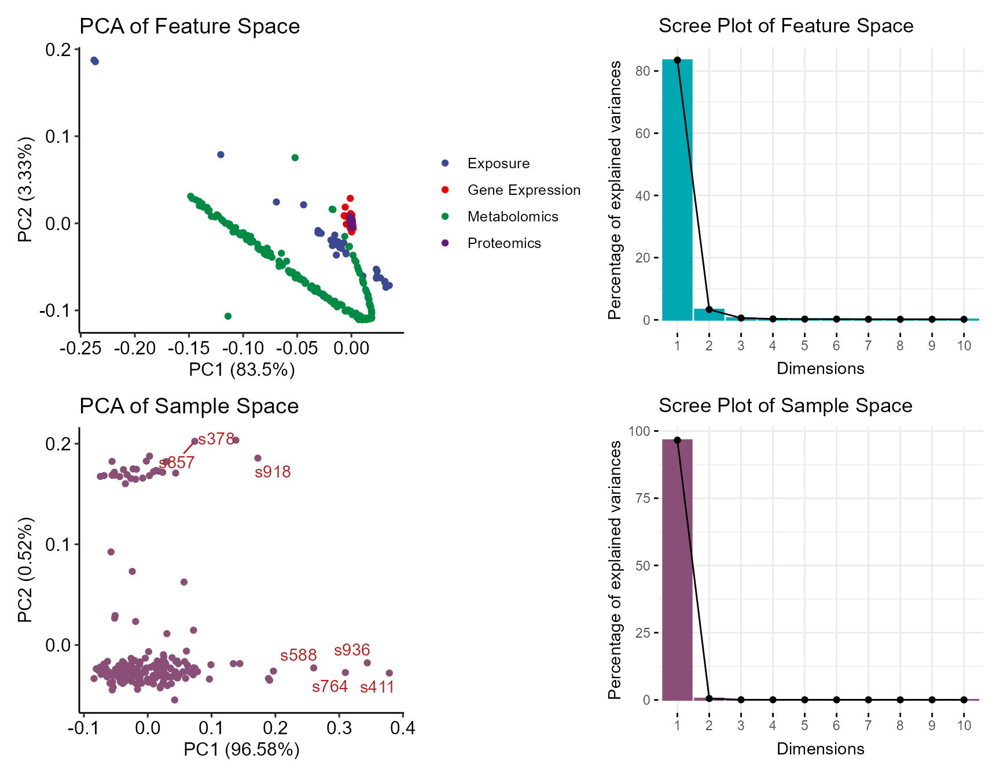
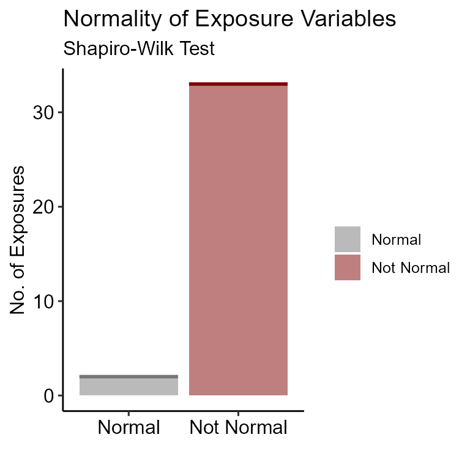
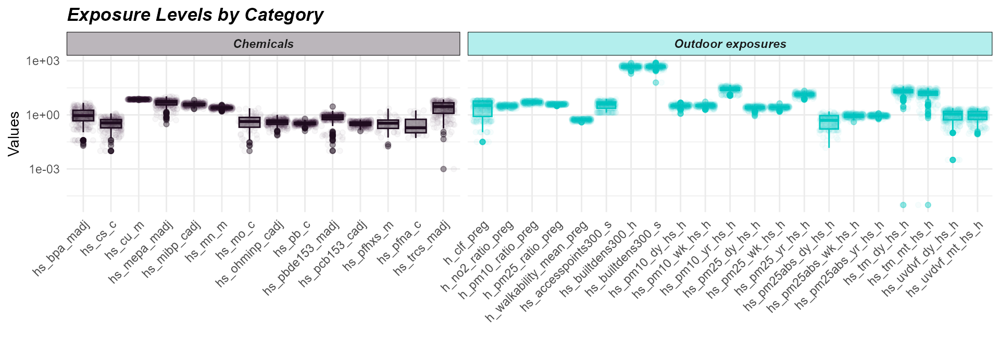
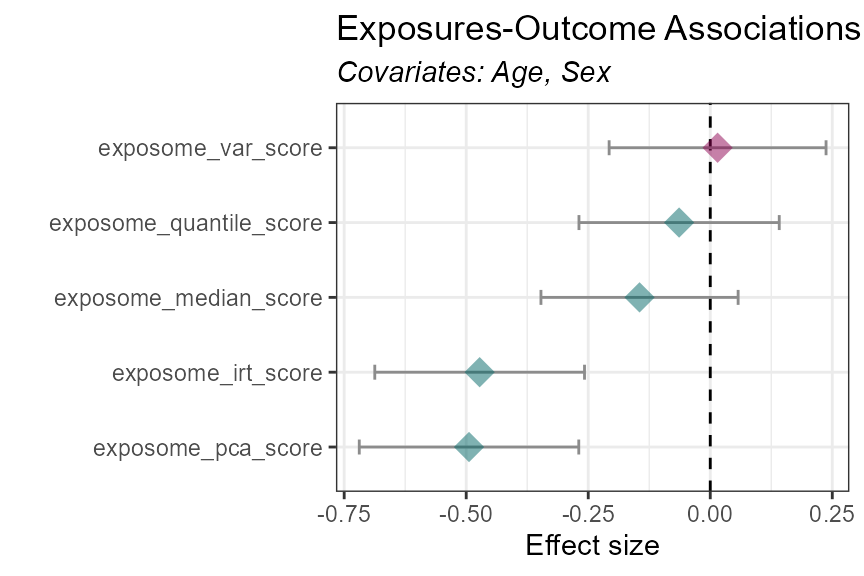
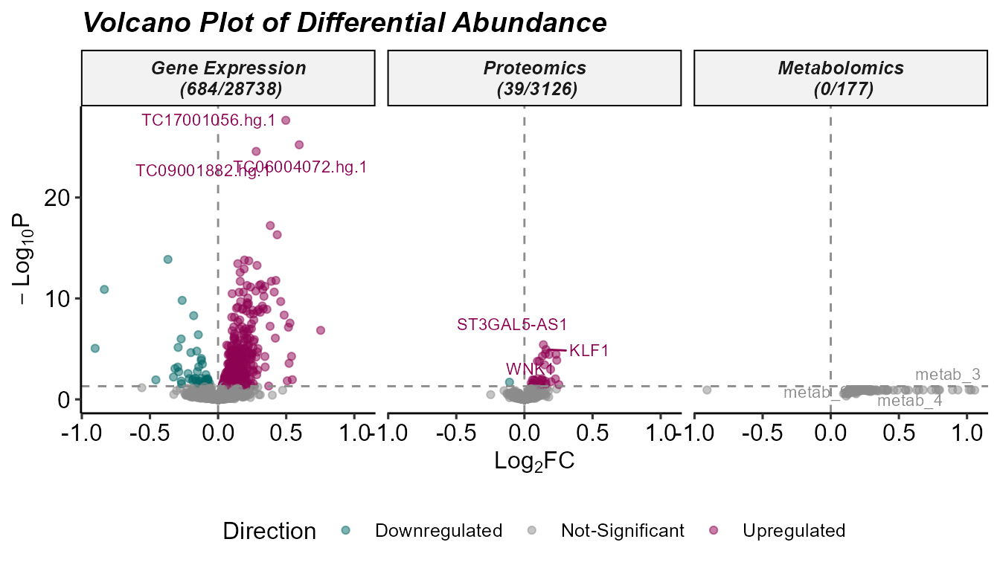
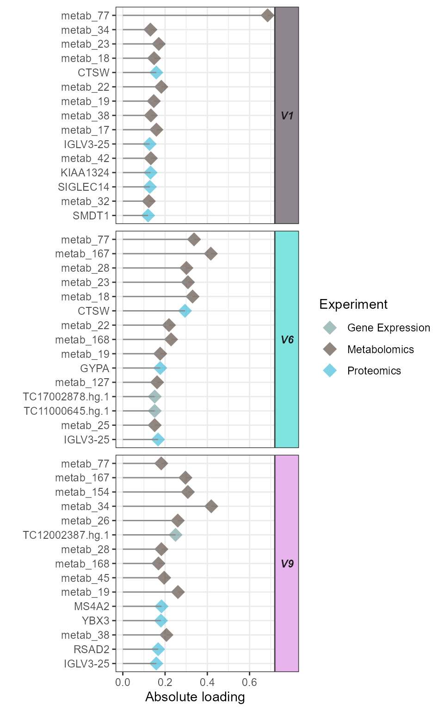
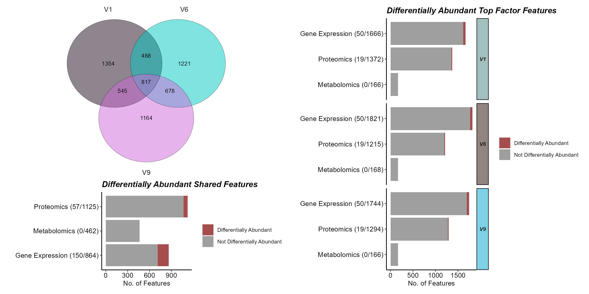
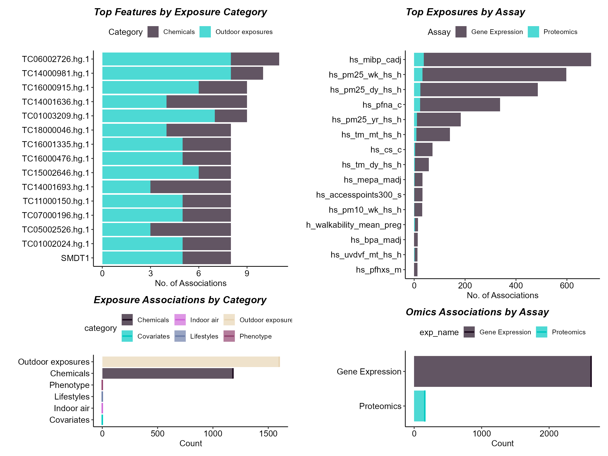
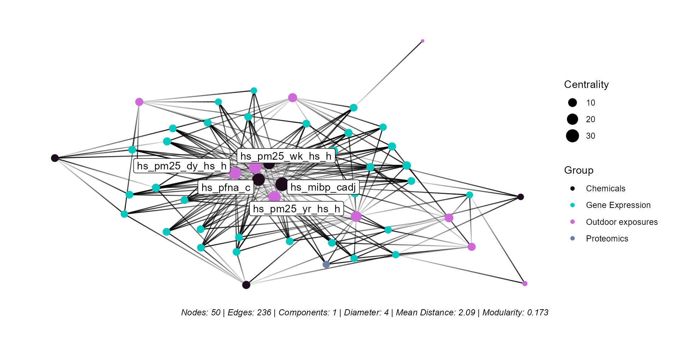
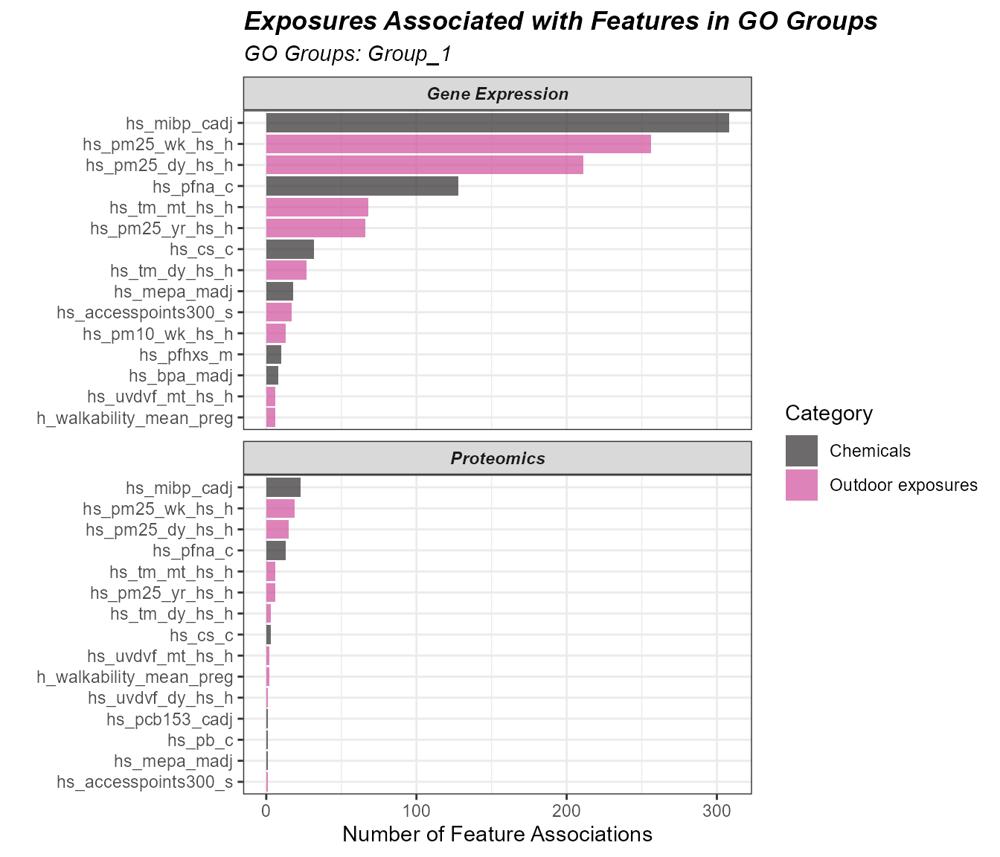

![logo]()
Exposure to environmental factors is a major determinant of health and disease. The exposome is a term that represents the totality of environmental exposures that drive disease and overall health (Wild et al. 2005). To tackle the daunting task of characterizing the relationship between a multiplicity of exposures and disease outcomes, epidemiological studies have moved towards exposure wide association studies (ExWAS) where sets of exposures are associated with an outcome (Chung et al. 2024). The advent of high-throughput technologies has enabled profiling of several layers of biological information. These layers too can be integrated to better understand the relationship between exposures and disease outcomes.
The tidyexposomics package is designed to facilitate the
integration of exposure and omics data to identify exposure-omics
associations. We structure our commands to fit into the
tidyverse framework, where commands are designed to be
simplified and intuitive. Here we provide functionality to perform
quality control, sample and exposure association analysis, differential
abundance analysis, multi-omics integration, and functional enrichment
analysis.

tidyexposomics pipeline overview. Exposure and omics data are stored in a MultiAssayExperiment. Data then undergoes quality control, sample and exposure associations, differential abundance analysis, multi-omics integration, and functional enrichment analysis. The pipeline is designed to be flexible and modular, allowing users to customize their analysis.
Installation
# install the current development version
devtools::install_github("BioNomad/tidyexposomics")Command Structure
To make the package more user-friendly, we have named our functions to be more intuitive. For example, we use the following naming conventions:

We provide functionality to either add results to the
existing object storing the omics/exposure data or to return the direct
results using the get option using the action
argument. We suggest adding results, as we also include a
run_pipeline_summary() function to generate a diagram of
the workflow. This is useful for keeping track of the pipeline
steps.
Exposure Meta data and Ontology Annotation
So before starting an exposomics data analysis we recommend having a codebook about your exposure variables. Some suggestions:
Variable Name: The name of the variable in the data set.
Variable Description: A concise description of what the variable measures, including units (e.g., “urinary bisphenol A (ng/mL)”)
Variable Type: The type of variable, such as continuous, categorical, or binary.
Variable Period: The period of time over which the variable was measured, such as “lifetime”, “year”, “month”, or “day”.
Variable Location: The location where the variable was measured, such as “home”, “work”, or “school”.
Variable Ontology: The ontology term associated with the variable.
Now the ontology is very important and we recommend:
Environment Exposure Ontology to annotate your exposure variables.
Human Phenotype Ontology to annotate your outcome variables and phenotypic data.
Chemical Entities of Biological Interest to annotate your chemical exposure variables.
Now why should you bother doing this?
Interpretability: Ontology labels clarify ambiguous or inconsistently named variables.
Harmonization: You can compare and combine variables across datasets when they map to the same term.
Grouping: Ontologies allow you to collapse fine-grained exposures into broader categories.
Integration: Many public tools, knowledge graphs, and repositories (e.g., EBI OLS, GO, or ChEBI) are ontology-aware. This can make your results more interoperable and reusable.
To help you annotate your exposure variables, we provide a lightweight shiny app that will help you decide which ontology terms to use and how to annotate your variable:
# Launch the shiny app to annotate exposure variables
ont_annot_app()Now to use the app:
Click “Browse” to select your exposure metadata file.
Then you can click the variable you’d like to link to an annotation term and search in the “Choose Ontology Term” dropdown.
After you select a term you will see a short description of the the term.
After your are done click “Apply Annotate” to save the annotation.
Now you can group exposures into larger categories by selecting each line and then your ontology, and root depth level (where a lower number means a more general term).
Then you can click “Apply Categorization” to apply the changes to the selected rows.
If the ontology has nothing to do with your variable, you may manually enter a category in the “Category” column. This will change the “Category Source” to “manual” and will not be linked to the ontology.
Once you have annotated all your variables click “Download Annotated CSV” to save the annotated metadata file.

Loading Data
To get started we need to load the data. The
create_expomicset function is used to create a
MultiAssayExperiment object that contains exposure and omics data. As a
quick introduction, a MultiAssayExperiment object is a container for
storing multiple assays (e.g., omics data) and their associated
metadata:
 ).](mae_rep.png)
Overview of the MultiAssayExperiment Object Structure.
Subject level data is captured within the colData of the
MultiAssayExperiment. Observations are stored within
experiments slots in the MultiAssayExperiment and
sampleMap is used to link the data ( MultiAssay
Special Interest Group 2024 ).
We use the MultiAssayExperiment object to store the exposure and
omics data. The create_expomicset function has several
arguments:
The
var_infoargument is a data frame that contains information about the variables in the exposure meta data. The column names must containvariablewhere the values are the column names of the exposure data frame, andcategorywhich contains general categories for the variable names. This is the data frame you created with the ontology annotation app!The
exposureargument is a data frame that contains the exposure and other metadata.The
omicsargument is a list of data frames that contain the omics data.The
row_dataargument is a list of data frames that contain information about the rows of each omics data frame.
We are going to start by loading in example data pulled from the ISGlobal Exposome data challenge 2021. Specifically, we will examine how exposures and omics features relate to asthma status.
# Load Libraries
library(tidyverse)
library(tidyexposomics)
# Create list of omics data frames
omics_list <- list(
"Gene Expression" = exp,
"Metabolomics" = met,
"Proteomics" = prot
)
# Create list of omics row data data frames
fdata <- list(
"Gene Expression" = exp_fdata,
"Metabolomics" = met_fdata,
"Proteomics" = prot_fdata
)
# Create the expomicset object
expom <- create_expomicset(
var_info = des,
exposure = meta,
omics = omics_list,
row_data = fdata)
# Define our exposure variables
exp_vars <- des |>
filter(grepl("exposure|chemical",category,ignore.case = TRUE)) |>
pull(variable) |>
as.character()Ensuring all omics datasets are matrices with column names...
Creating SummarizedExperiment objects with ordered samples and matching rowData...
Creating MultiAssayExperiment object...
MultiAssayExperiment created successfully with ordered samples and rowData.Quality Control
Missingness
Oftentimes when collecting data, there are missing values. The
filter_missing function is used to filter out variables
with too many missing values. The na_thresh argument is
used to set the threshold for missing values. For example, if
na_thresh = 20, then any variable with more than 20%
missing values will be removed. Here we set the threshold to 1% to
filter out variables with more than 1% missing values.
# Filter out variables with too many missing values
expom <- expom |>
filter_missing(na_thresh = 1)Missing Data Filter threshold: 1%
Filtered metadata variables: h_parity
Filtered rows with high missingness in Gene Expression: 0
Filtered rows with high missingness in Metabolomics: 0
Filtered rows with high missingness in Proteomics: 0We can plot the number of missing values using the
plot_missing_summary function. This function plots the
number of missing values for each variable in the exposure data. The
threshold argument is used to set the threshold for missing
values.
# Check the number of missing values
expom |>
plot_missing_summary(threshold = 1)
Here we see that only our exposure data has missing values, and that the majority of variables have less than 1% missing values.
Imputation
Now that we have filtered out the variables with too many missing
values, we can impute the missing values. The
run_impute_missing function is used to impute missing
values. While we impute using median here for the speed, we
recommend trying the other imputation options:
mean: Imputes missing values with the mean of the variable.knn: Uses k-nearest neighbors to impute missing values.mice: Uses the Multivariate Imputation by Chained Equations (MICE) method to impute missing values.dep: Uses the DEP method to impute missing values.missforest: Uses the MissForest method to impute missing values.lod_sqrt2: Imputes missing values using the square root of the lower limit of detection (LOD) for each variable. This is useful for variables that have a lower limit of detection, such as chemical exposures.
# Impute missing values
expom <- expom |>
run_impute_missing(
exposure_impute_method = "median",
omics_impute_method = "median")Imputing exposure data using method: median
Imputing omics dataset: Gene Expression using method: median
Imputing omics dataset: Metabolomics using method: median
Imputing omics dataset: Proteomics using method: medianPCA Analysis
To identify the spread of the data, we can perform a principal
component analysis (PCA). The run_pca function is used to
perform PCA on samples with observations in each omics data frame. The
plot_pca function is used to plot the PCA results. We
automatically identify sample outliers based on the Mahalanobis
distance, a measure of the distance between a point and a
distribution.
# Perform principal component analysis
expom <- expom |>
run_pca(action = "add") Identifying common samples...
Subsetting exposure data...
Subsetting omics data...
Performing PCA on Feature Space...
Performing PCA on Sample Space...
[1] "Outliers detected: s936, s764, s588, s857, s378, s411, s918"
# Plot principal component analysis results
expom |>
plot_pca()
Here we see have a few sample outliers, and that most variation is
captured in the first two principal components for both features and
samples. We can filter out these samples using the
filter_sample_outliers function.
# Filter out sample outliers
expom <- expom |>
filter_sample_outliers(
outliers = c("s411","s378", "s588",
"s764", "s857", "s918",
"s936"))Normality Check
When determining variable associations, it is important to check the
normality of the data. The run_check_normality function is
used to check the normality of the data. The
transform_exposure function is used to transform the data
to make it more normal. Here the transform_method is set to
boxcox_best as it will automatically select the best
transformation method based on the data. The
transform_method can be manually set to log2,
sqrt, or x_1_3 as well.
# Check variable normality & transform variables
expom <- expom |>
# Check variable normality
run_normality_check(action = "add") |>
# Transform variables
transform_exposure(transform_method = "boxcox_best",
exposure_cols = exp_vars) Checking Normality Using Shapiro-Wilk Test
0 Exposure Variables are Normally Distributed
37 Exposure Variables are NOT Normally Distributed
Applying the boxcox_best transformation.To check the normality of the data, we can use the
plot_normality_summary function. This function plots the
normality of the data before and after transformation. The
transformed argument is set to TRUE to plot
the transformed data.
expom |>
plot_normality_summary(
transformed = TRUE
)
Exposure Summary
We can summarize the exposure data using the
run_summarize_exposures function. This function calculates
summary statistics for each exposure variable, including the number of
values, number of missing values, minimum, maximum, range, sum, median,
mean, standard error, and confidence intervals. The action
argument is set to get to return the summary statistics as
a data frame. If action = "add", the results are added to
the metadata of the MultiAssayExperiment object.
# Summarize exposure data
expom |>
run_summarize_exposures(action = "get") |>
head()## # A tibble: 6 × 17
## variable n_values n_na min max range sum median mean se ci_lower
## <chr> <dbl> <dbl> <dbl> <dbl> <dbl> <dbl> <dbl> <dbl> <dbl> <dbl>
## 1 h_PM 269 0 5.24 82.1 76.9 4176. 12.3 15.5 0.67 14.2
## 2 h_clf_preg 269 0 0.03 6.77 6.73 912. 3.32 3.39 0.14 3.12
## 3 h_no2_rati… 269 0 2.11 4.14 2.04 835. 3.12 3.1 0.03 3.05
## 4 h_pm10_rat… 269 0 3.34 6.91 3.57 1351. 4.94 5.02 0.05 4.93
## 5 h_pm25_rat… 269 0 3.06 4.57 1.5 1039. 3.83 3.86 0.02 3.83
## 6 h_walkabil… 269 0 0.39 0.74 0.35 143. 0.52 0.53 0 0.53
## # ℹ 6 more variables: ci_upper <dbl>, variance <dbl>, sd <dbl>, coef_var <dbl>,
## # category <fct>, sub_category <fct>Exposure Visualization
To visualize our exposure data, we can use the
plot_exposures function. This function allows us to plot
the exposure data in a variety of ways. Here we will plot the exposure
data using a boxplot. The exposure_cols argument is used to
set the columns to plot. Additionally, we could specify,
exposure_cat to only plot exposures of a certain category.
The panel_sizes argument is used to set the size of each
panel in the plot. The plot_type argument is used to set
the type of plot to create. Here we use a boxplot, but we could also use
a ridge plot. The ylab argument is used to set the y-axis
label.
# Plot exposure data
expom |>
plot_exposures(
panel_sizes = c(3,4),
exposure_cols = exp_vars,
plot_type = "boxplot",
ylab = "Values")
Sample-Exposure Association
Sample Clustering
The run_cluster_samples function is used to cluster
samples based on the exposure data. The clustering_approach
argument is used to set the clustering approach to automatically
identify clusters. Here we use the dynamic approach, which
uses a dynamic tree cut method to identify clusters. However, you may
choose between these other options as well:
gap: Gap statistic method (default); estimates optimalkby comparing within-cluster dispersion to that of reference data.diana: Divisive hierarchical clustering (DIANA); chooseskbased on the largest drop in dendrogram height.elbow: Elbow method; detects the point of maximum curvature in within-cluster sum of squares (WSS) to determinek.dynamic: Dynamic tree cut; adaptively detects clusters from a dendrogram structure without needing to predefinek.density: Density-based clustering (viadensityClust); identifies clusters based on local density peaks in distance space.
# Sample clustering
expom <- expom |>
run_cluster_samples(exposure_cols = exp_vars,
clustering_approach = "dynamic",
action = "add") Starting clustering analysis...
..cutHeight not given, setting it to 8730 ===> 99% of the (truncated) height range in dendro.
..done.
Optimal number of clusters for samples: 6
# Plot sample clusters
expom |>
plot_sample_clusters(
exposure_cols = exp_vars)
Here we see seven clusters, largely driven by particulate matter and chemical exposure.
Exposure Correlations
The correlate_exposures function is used to correlate
exposures with each other. The exposure_cols argument is
used to set the columns to correlate. The
correlation_cutoff argument is used to set the minimum
correlation score for the association. Here we use a cutoff of 0.3, but
this can be adjusted based on the data.
expom <- expom |>
run_correlation(feature_type = "exposures",
action = "add",
correlation_cutoff = 0.3)To visualize the exposure correlations, we can use the
plot_circos_correlation or
plot_heatmap_correlate_exposure functions. Here we will
plot the circos plot. This function creates a circular plot of the
exposure correlations. The correlation_cutoff argument is
used to set the minimum correlation score for the association. Here we
use a cutoff of 0.3, but this can be adjusted based on the data.
expom |>
plot_circos_correlation(feature_type = "exposures",
corr_threshold = 0.3,
exposure_cols = exp_vars)
ExWAS Association
The perform_exwas function is used to perform ExWAS
analysis. The source argument is used to set the source of
the data. Here we use exposures to indicate that we are
using the exposure data. The outcome argument is used to
set the outcome variable. The feature_set argument is used
to set the features to include in the analysis. The
covariates argument is used to set the covariates to
include in the analysis. The family argument is used to set
the family of the model. Here we use binomial for a binary
outcome.
# Perform ExWAS Analysis
expom <- expom |>
run_association(
source = "exposures",
outcome = "hs_asthma",
feature_set = exp_vars[
!exp_vars %in% c("hs_asthma",
"hs_child_age",
"e3_sex")],
covariates = c("hs_child_age",
"e3_sex"),
action = "add",
family = "binomial")Running GLMs...To visualize the results of the ExWAS analysis, we can use the
plot_associate_exposure_outcome function. This function
plots the association results for the exposure data. The
source argument is used to set the source of the data. Here
we use exposures to indicate that we are using the exposure
data. The subtitle argument is used to set the subtitle of
the plot. The filter_thresh argument is used to set the
p-value threshold for significance.
expom |>
plot_association(
subtitle = paste("Covariates:","Age,","Sex"),
source = "exposures",
filter_thresh = 0.05)
Here we see that particulate matter, PBDE, and disinfection byproduct
levels are associated with asthma status after adjusting for age and
sex. We can also associate our omics features with an outcome of
interest using the run_association() function.
# Perform ExWAS Analysis
expom <- expom |>
run_association(
outcome = "hs_asthma",
source = "omics",
covariates = c("hs_child_age",
"e3_sex"),
top_n = 500,
action = "add",
family = "binomial")Log2-Transforming each assay in MultiAssayExperiment...
Scaling each assay in MultiAssayExperiment...
Running GLMs...We can visualize the results using a Manhattan plot. The
plot_manhattan function is used to plot the results. The
pval_thresh argument is used to set the p-value threshold
for significance. The vars_to_label argument is used to set
the variables to label on the plot. The min_per_cat
argument is used to set the minimum number of significant features per
category to include in the plot. The panel_sizes argument
is used to set the size of each panel in the plot.
expom |>
plot_manhattan(
min_per_cat = 0,
vars_to_label = c("TC17001579.hg.1","TC02003949.hg.1","HMGN2P28"),
panel_sizes = c(1,4,2,1,3))
Exposome Scores
We can also calculate exposome scores, which are a summary measure of
exposure. The run_exposome_score function is used to
calculate the exposome score. The exposure_cols argument is
used to set the columns to use for the exposome score. The
score_type argument is used to set the type of score to
calculate. Here we could use:
median: Calculates the median of the exposure variables.mean: Calculates the mean of the exposure variables.sum: Calculates the sum of the exposure variables.pca: Calculates the first principal component of the exposure variables.irt: Uses Item Response Theory to calculate the exposome score.quantile: Calculates the quantile of the exposure variables.
The score_column_name argument is used to set the name
of the column to store the exposome score in.
# Calculate Exposome Scores
expom <- expom |>
run_exposome_score(exposure_cols = exp_vars,
score_type = "median",
score_column_name = "exposome_median_score") |>
run_exposome_score(exposure_cols = exp_vars,
score_type = "pca",
score_column_name = "exposome_pca_score") |>
run_exposome_score(exposure_cols = exp_vars,
score_type = "irt",
score_column_name = "exposome_irt_score") |>
run_exposome_score(exposure_cols = exp_vars,
score_type = "quantile",
score_column_name = "exposome_quantile_score") |>
run_exposome_score(exposure_cols = exp_vars,
score_type = "var",
score_column_name = "exposome_var_score")Extracting exposure data...
Extracting exposure data...
Extracting exposure data...
Extracting exposure data...
Extracting exposure data...
Calculating median exposure scores...
Calculating PCA exposure scores...
Calculating IRT exposure scores...
Iteration: 52, Log-Lik: -21076.825, Max-Change: 0.00010
Calculating quantile exposure scores...
Calculating variance exposure scores...We can then associate these exposome scores with the outcome of
interest using the run_association function, just like we
did before. However, this time we specify our feature_set
to be the exposome scores we just calculated.
# Associate Exposome Scores with Outcome
expom <- expom |>
run_association(
outcome = "hs_asthma",
source = "exposures",
feature_set = c("exposome_median_score",
"exposome_pca_score",
"exposome_irt_score",
"exposome_quantile_score",
"exposome_var_score"),
covariates = c("hs_child_age",
"e3_sex"),
action = "add",
family = "binomial")Running GLMs...To plot the results of the exposome score association with the
outcome, we can use the plot_association function:
expom |>
plot_association(
subtitle = paste("Covariates:","Age,","Sex"),
source = "exposures",
terms = c("exposome_median_score",
"exposome_pca_score",
"exposome_irt_score",
"exposome_quantile_score",
"exposome_var_score"),
filter_thresh = 1)
Here we see that most scores are associated with a decreased probability of asthma.
Differential Abundance
Differential Abundance
We also provide functionality to assess differentially abundant
features associated with a particular outcome across several omics’
layers. The run_differential_abundance function is used to
run the differential abundance analysis. The formula
argument is used to set the formula for the model. The
method argument is used to set the method to use for the
differential abundance analysis. Here we use the limma_voom
method, which is a popular method for differential abundance analysis.
The minimum_counts and minimum_proportion
arguments are used to filter out features with low counts or low
proportions. The scaling_method argument is used to set the
scaling method to use. Here we use none, but we could also
use quantile or TMM. The action
argument is set to add to add the results to the existing
object.
# Run differential abundance analysis
expom <- expom |>
run_differential_abundance(
formula = ~ hs_asthma + hs_child_age + e3_sex,
method = "limma_voom",
minimum_counts = 1,
minimum_proportion = 0.1,
scaling_method = "none",
action = "add") Running differential abundance testing...
Processing assay: Gene Expression
No group or design set. Assuming all samples belong to one group.
...
Differential abundance testing completed.Using a volcano plot, we can visualize the results of the
differential abundance analysis. The plot_volcano function
is used to plot the results. The pval_thresh argument is
used to set the p-value threshold for significance. The
logFC_thresh argument is used to set the log fold change
threshold for significance. The top_n_label argument is
used to set the number of top features to label on the plot. The
nrow argument is used to set the number of rows in the
facet layout.
# Plot Differential Abundance Results
expom |>
plot_volcano(
top_n_label = 3,
logFC_thresh = log2(1),
pval_thresh = 0.05,
nrow = 1)
Sensitivity Analysis
Depending on pre-processing steps, the results of the differential
abundance analysis may vary. The sensitivity_analysis
function is used to perform a sensitivity analysis to determine the
robustness of the results. Here we determine if a feature is still
differentially abundant if different minimum values, proportions,
scaling methods are used, the inclusion of covariates, and after
bootstrapping. We then define a stability score based on the number of
times a feature is found to be differentially abundant under different
conditions as well as the consistency of the effect size:
\[ Stability\ Score = \frac{\sum_i{(p_i < \alpha)}}{N} * \frac{1}{1 + \frac{\sigma_{\beta}}{\mu_{|\beta|}}}\]
Where:
\(p_i\) is the p-value for the \(i^{th}\) test
\(\alpha\) is the significance threshold
\(N\) is the number of tests
\(\sigma_{\beta}\) is the standard deviation of the effect size estimates
\(\mu_{|\beta|}\) is the mean of the absolute value of the effect size estimates.
The first term captures the proportion of tests that are significant, while the second term captures the consistency of the effect size estimates. The stability score ranges from 0 to 1.
A stability score of 1 indicates that the feature is always found to be differentially abundant, while a stability score of 0 indicates that the feature is never found to be differentially abundant. Besides these, we provide other score metrics as well:
presence_rate: Proportion of runs in which the feature’s p-value is below the specified threshold (selection frequency).effect_consistency: Inverse of the coefficient of variation of log fold-changes; measures effect size stability across runs.stability_score: Hybrid score combiningpresence_rateandeffect_consistency, capturing reproducibility and signal strength.mean_log_p: Average of negative log-transformed p-values; represents overall statistical signal strength.logp_weighted_score: Product ofmean_log_pandeffect_consistency; highlights consistently strong features.sd_logFC: Standard deviation of log fold-change estimates; quantifies variability of effect sizes.iqr_logFC: Interquartile range of log fold-changes; provides a robust measure of effect size spread.cv_logFC: Coefficient of variation of log fold-changes; reflects relative variability of effect size.sign_flip_freq: Proportion of runs where the sign of the effect size differs from the overall average direction.sd_log_p: Standard deviation of log-transformed p-values; indicates variability in statistical signal.
# Perform Sensitivity Analysis
expom <- expom |>
run_sensitivity_analysis(
base_formula = ~ hs_asthma + hs_child_age + e3_sex,
methods = c("limma_voom"),
scaling_methods = c("none"),
min_counts_range = c(1,5),
min_proportion_range = c(0.1,0.3),
covariates_to_remove = c("hs_child_age" , "e3_sex"),
pval_col = "adj.P.Val",
logfc_col = "logFC",
pval_threshold = 0.05,
stability_metric = "stability_score",
bootstrap_n = 10,
action = "add") Running differential abundance testing...
Processing assay: Gene Expression
...
Feature stability analysis completed.
Number of features above threshold of 0:
-----------------------------------------
Proteomics: 50/3126
Gene Expression: 996/28738
Metabolomics: 0/177
Sensitivity analysis completed.Here we plot the sensitivity analysis results using the
plot_sensitivity_summary function. The
stability_score_thresh argument is used to set the
stability score threshold for significance. Here we use a threshold of
0.25, but this can be adjusted based on the data. Here we set the
threshold to be quite liberal based given this is highly subsampled
data.
# Plot sensitivity analysis results
expom |>
plot_sensitivity_summary(stability_score_thresh = 0.25,
stability_metric = "stability_score")
Multi-Omics Integration
Multi-Omics Integration
While differential abundance analysis per omic can deliver insights
into how each omic is associated with a particular outcome, we may want
to leverage methods which integrate multiple omics layers. The
run_multiomics_integration function is used to integrate
multiple omics layers. Here we use either MCIA,
MCCA or the MOFA method to integrate omics
layers:
MCIA: Multiple Co-inertia Analysis, a method that uses canonical correlation analysis to integrate multiple omics layers. We use the nipalsMCIA algorithm to compute the co-inertia scores from the nipalsMCIA package.MCCA: Multi-Omics Canonical Correlation Analysis, a method that uses canonical correlation analysis to integrate multiple omics layers. We use the PMA package to compute the canonical correlation score.MOFA: Multi-Omics Factor Analysis, a method that uses factor analysis to integrate multiple omics layers. MOFA is implemented using the MOFA2 package.
# Perform Multi-Omics Integration
expom <- expom |>
run_multiomics_integration(method = "MCIA",
action = "add") Scaling each assay in MultiAssayExperiment...
Running multi-omics integration using MCIA...
Applying MCIA with NIPALS...
Performing column-level pre-processing...
Column pre-processing completed.
Performing block-level preprocessing...
Block pre-processing completed.
Computing order 1 scores
Computing order 2 scores
Computing order 3 scores
Computing order 4 scores
Computing order 5 scores
Computing order 6 scores
Computing order 7 scores
Computing order 8 scores
Computing order 9 scores
Computing order 10 scoresWe can then use plot_factor_summary() to visualize which
omics contribute most to which factors.
# Plot multi-omics factor summary
expom |>
plot_factor_summary()
Factor Analysis
These methods are designed to identify factors that we can then
associate with an outcome variable. Here we will use the
associate_factor_outcome function to identify factors that
are associated with asthma status after controlling for the child age
and sex. Additionally, we will set the p-value threshold,
pval_thresh, to 1 to include all factors. The
action argument is set to add to add the
results to the existing object. Here we print the results to the
console, but this can be set to FALSE to suppress the
output.
# Identify factors that correlate with the outcome
expom <- expom |>
run_association(
source = "factors",
outcome = "hs_asthma",
feature_set = exp_vars[
!exp_vars %in% c("hs_asthma",
"hs_child_age",
"e3_sex")],
covariates = c("hs_child_age",
"e3_sex"),
action = "add",
family = "binomial",
print = TRUE)term p.value
<chr> <dbl>
V1 0.17083208
V2 0.79768883
V3 0.97476037
V4 0.59766388
V5 0.22535931
V6 0.05436188
V7 0.59501506
V8 0.83149295
V9 0.14050018
V10 0.47106052We see that the first, sixth and ninth factor are associated with asthma status at a p-value below 0.2. Factors have loading scores which indicate the strength of the association between the factor and the features. Here we can extract the top features, those in the 90th percentile, per omic, associated with our factors of interest.
# Extract top features that contribute to a factor
expom <- expom |>
extract_top_factor_features(factors = c("V1", "V6", "V9"),
method = "percentile",
percentile = 0.9,
action = "add") Extracting top contributing features for specified factors...
Using MCIA block loadings...
Selected 9612 features contributing to specified factors.We can visualize the top features associated with each factor using
the plot_top_factor_features function. The
top_n argument is used to set the number of top features to
plot. The factors argument is used to set the factors to
plot.
# Plot top factor features
expom |>
plot_top_factor_features(
top_n = 15,
factors = c("V1", "V6", "V9"))
Immediately, we can see that these factors share some common
features, such as the CTSW gene. We can also see that the
factors are associated with different omics layers. To identify the
common features across factors, we can use the
run_factor_overlap function. This function will identify
the features that are shared across the specified factors.
expom <- expom |>
run_factor_overlap(stability_score = 0.25,
robust_comparison = T,
score_col = "stability_score",
pval_thresh = 0.05,
pval_col = "p.value",
logfc_thresh = log2(1.1))Found 817 common features across factors.Let’s visualize how these features overlap across factors. The
plot_factor_overlap function is used to plot the overlap of
features across factors.
expom |>
plot_factor_overlap()
Here we see that there are 817 features that are shared across the factors. However, only a subset, ~ 200 features, are differentially abundant.
Exposure-Omics Association
Exposure-Omics Association
Now we have the option to correlate either the top factor features,
differentially abundant features, or user specified omics features (by
using a variable map, a data frame with two columns,
exp_name for the name of the omics assay, and
feature for the name of the molecular feature) with
exposures. Here we will correlate the differentially abundant features
with exposures. Setting robust to TRUE will
use features with a stability score over score_thresh. We
can also set thresholds for the differential expression log fold change
and p-value to filter the results. The correlation_cutoff
is used to set the minimum correlation score, while the
pval_cutoff is used to set the maximum p-value for the
association.
# Correlate top differentially abundant features with exposures
expom <- expom |>
run_correlation(feature_type = "degs",
exposure_cols = exp_vars,
action = "add",
correlation_cutoff = 0.01,
deg_logfc_col = "logFC",
deg_logfc_thresh = log2(1),
pval_cutoff = 0.1,
robust = T,
score_col = "stability_score",
score_thresh = 0.25)Performing correlation analysis on summarized experiment...
Running Spearman correlation analysis...
Correlation analysis completed.
Processing experiment: Proteomics
- Processing batch 1 of 1 (48 features)...
Performing correlation analysis on summarized experiment...
Running Spearman correlation analysis...
Correlation analysis completed.We can plot the results of the exposure-omics association analysis
using the plot_bar_correlate_summary function. Here we set
the mode to summary, which will plot the number of
associations per exposure and feature type. The
feature_type argument is used to set the type of features
to plot. Here we use degs, which are the differentially
abundant features. The exposure_cols argument is used to
set the columns to plot.
expom |>
plot_correlation_summary(mode = "summary")
Here we note that transcriptomic features have a greater number of
associations with exposures. Among exposures, we see that outdoor
exposures have the greatest number of associations with features. It may
also be useful to identify which exposures are correlated with similar
molecular features. We can do this with the
plot_circos_exposure_shared_features function. This
function will plot a circos plot of the exposures and their shared
features. The geneset argument is used to set the geneset
to use for the analysis. Here we use the degs geneset,
which plots the differentially abundant feature - exposure correlation
information. The cutoff argument is used to set the minimum number of
shared features to plot. Here we set the cutoff to 0, which means that
all shared features will be plotted.
# Plot Shared Feature Correlations Between Exposures
expom |>
plot_circos_correlation(feature_type = "degs",
shared_cutoff = 10,
midpoint = 200)
Network Analysis
The run_create_network function is used to create a
network of exposures and omics features. The correlation results are
used to create the network. The feature_type argument is
used to set the type of features to use for the network. Here we use
degs, which are the differentially abundant features.
However we could choose anyo f the following:
degs: Differentially abundant features correlated with exposures.factors: Factor features correlated with exposures.omics: User specified omics features correlated with exposures.
expom <- expom |>
run_create_network(
feature_type = "degs",
action = "add")Creating network from correlation results...
Network added to metadata as: network_degsTo plot the network we can use the plot_network
function. The network argument is used to set the type of
network to plot. The top_n_nodes argument is used to set
the number of nodes to plot. The node_color_var argument is
used to set the variable to color the nodes by. The label
argument is used to set whether or not to label the nodes. We can label
the top n nodes, where the default is 5 nodes based on centrality.
Addtionally, we can chose to label certain nodes using the
nodes_to_label arguement. The facet_var
argument is used to set the variable to facet the plot by. The
foreground argument is used to set the color of the facets.
We can also include the network statistics using the
include_stats argument.
expom |>
plot_network(
network = "degs",
top_n_nodes = 50,
include_stats = TRUE,
cor_thresh =0.090,
node_color_var = "group",
label = T,
label_top_n = 5)
Extracting graph...
Filtering nodes based on correlation threshold...
Filtering top 50 nodes based on centrality...Here we note that the network is highly connected, with chemical exposures and particulate matter exposures having the most connections to omics features. It should be noted these networks will look different based on the type of correlation analysis you perform:
degs: Correlation between differentially abundant features and exposures. Meaning that connections between exposures and between omics will be missing.factors: Correlation between factors and exposures. Meaning that connections between factor features and between exposures will be missing.omics: Correlation between omics features and exposures. Where there will be connections between omics and features.
Exposure-Omics Impact Network Analysis
When examining an outcome variable, the number of omics features
associated with that variable have different coexpression relationships
with each other. Features with high coexpression have higher degree and
therefore may be more important in the network. The
run_exposure_impact function is used to run an
exposure-omics impact analysis. Here we calculate the degree of features
associated with exposures. We can then see is a particular exposure
associated with higher degree features. The
stability_threshold argument is used to set the stability
threshold for the features. Here we use a threshold 0.25, which means
that only features with a stability score above 0.25 will be included in
the analysis.
# Run exposure-omics impact analaysis
expom <- expom |>
run_exposure_impact(feature_type = "degs",
stability_threshold = 0.25,
robust = T)To plot the results of the exposure-omics impact analysis, we can use
the plot_exposure_impact function. We set
feature_type to degs, which means that we are
plotting the degree of the differentially abundant features correlated
with exposures. The min_per_group argument is used to set
the minimum number of features per group to plot. This is useful for
filtering out exposures that do not have enough associated features. The
ncol argument is used to set the number of columns in the
plot, while the widths argument is used to set the widths
of the columns in the plot.
# Plot exposure-omics impact results
expom |>
plot_exposure_impact(
feature_type = "degs",
min_per_group = 10,
ncol = 2,
widths = c(3,1))
Here we see that BPA (hs_bpa_madj) and methyl paraben
(hs_mepa_madj) exposure, while not associated with as many
differentially abundant features as Monoisobutyl phthalate
(hs_mibp_cadj), the features that these exposures are
associated with are have about the same degree, suggesting that they may
still be an important exposure to consider in the context of asthma.
Additionally, we note that more than half of the features associated
with asthma are associated with the exposures we profiled, while the
remaining are not associated with any exposures. This suggests that we
may be missing exposures to profile or that these features are not
environmentally responsive.
Enrichment Analysis
The benefit of grouping our exposures into categories is that we can
perform enrichment analysis on the associated features to determine how
broad categories of exposures are associated with features. The
run_enrichment function is used to perform enrichment
analysis. Here we use the deg_exp_cor geneset to perform
enrichment on differentially abundant features correlated with
exposures. However, we could enrich the following gene sets:
deg: Differentially abundant features.deg_exp_cor: Differentially abundant features correlated with exposures.factor_exp_cor: Top factor features correlated with exposures.factor: Top actor features.
# Perform Functional Enrichment Analysis
expom <- expom |>
run_enrichment(
geneset = "deg_exp_cor",
feature_col = "gene",
clustering_approach = "dynamic",
pval_threshold = 0.05,
pval_col = "p.value",
pvalueCutoff = 0.1,
pAdjustMethod = "none",
qvalueCutoff = 1,
logfc_threshold = log2(1),
action="add")Working on: Gene Expression
Working on: Proteomics
Determining Number of GO Term Clusters...
..cutHeight not given, setting it to 485 ===> 99% of the (truncated) height range in dendro.
..done.
Optimal number of clusters for samples: 11Plot Enrichment Results
To visualize our enrichment results, we can use the
plot_dotplot_enrichment function. The geneset
argument is used to set the geneset to plot. The top_n
argument is used to set the number of top enrichment terms to plot. The
n_per_group argument is used to set the number of
enrichment terms per group to plot. The add_top_genes
argument is used to add the top genes associated with each enrichment
term. The top_n_genes argument is used to set the number of
top genes to plot.
# Plot functional enrichment results
expom |>
plot_dotplot_enrichment(geneset = "deg_exp_cor",
top_n = 5,
n_per_group = 5,
add_top_genes = TRUE,
top_n_genes = 5)
You’ll notice that enrichment terms are organized into groups by omic layer, the exposure category these features are associated with, and the Jaccard similarity of the GO term genesets. We then provide the top 5 groups of enrichment terms based on a prioritization score calculated by:
\[ Prioritization\ Score = \frac{1}{N} * \sum_{i=1}^{N} -log_{10}(p_i) * n_{genes} \]
Where: - \(N\) is the number of enrichment terms in the group - \(p_i\) is the p-value for the \(i^{th}\) enrichment term in the group - \(n_{genes}\) is the number of genes in the enrichment term
So essentially, this is the mean of the negative Log10 of the p-value multiplied by the number of genes in the term. Here we see that that outdoor exposures and chemicals are broadly associated with all of the top enrichment term groups.
Exposures Driving Enrichment
We can also visualize the exposures driving the enrichment terms
using the plot_go_group_exposures function. The
go_groups argument is used to set the GO groups to plot.
The feature_col argument is used to set the column
containing the features to plot. We specify feature_col
because the gene expression assay rownames were probe IDs and not gene
names. This highlights the importance of specifying the correct feature
column when plotting enrichment results. Here we will plot the exposures
driving the enrichment terms for a specific GO group, “Group_1”.
expom |>
plot_go_group_exposures(
go_groups = c("Group_1"),
feature_col = "gene"
)
Here we note that similar exposures associated with both proteomics and gene expression features drive the enrichment terms in this group.
Custom Analysis
Now what if there are analyses, summary statistics, or plots that you
would like to create on your own? We provide functionality to access the
underlying data in the MultiAssayExperiment object and
construct tibbles for your own analysis:
pivot_sample: Pivot the sample data to a tibble with samples as rows and exposures as columns.pivot_feature: Pivot the feature meta data to a tibble with features as rows and feature meta data as columns.pivot_exp: Pivot the sample and experiment assay data to a tibble with samples as rows and sample meta data as columns. Additionally, there will be a column for values for specified features in specified assays.
Pivot Sample
Let’s check out the pivot_sample function. This function
pivots the sample data to a tibble with samples as rows and exposures as
columns.
# Pivot sample data to a tibble
expom |>
pivot_sample() |>
head()## # A tibble: 6 × 269
## .sample h_PM hs_greenyn300_h h_greenyn300_preg hs_participation_3cat
## <chr> <dbl> <fct> <fct> <fct>
## 1 s548 13.9 1 1 None
## 2 s555 7.48 1 1 None
## 3 s368 12.7 0 0 1 organisation
## 4 s175 8.85 1 1 None
## 5 s241 14.7 1 1 None
## 6 s600 11.0 1 1 2 or more organisations
## # ℹ 264 more variables: hs_smk_parents <fct>, hs_asthma <ord>,
## # hs_child_age <dbl>, e3_sex <fct>, PC1 <dbl>, PC2 <dbl>, PC3 <dbl>,
## # PC4 <dbl>, PC5 <dbl>, PC6 <dbl>, PC7 <dbl>, PC8 <dbl>, PC9 <dbl>,
## # PC10 <dbl>, PC11 <dbl>, PC12 <dbl>, PC13 <dbl>, PC14 <dbl>, PC15 <dbl>,
## # PC16 <dbl>, PC17 <dbl>, PC18 <dbl>, PC19 <dbl>, PC20 <dbl>, PC21 <dbl>,
## # PC22 <dbl>, PC23 <dbl>, PC24 <dbl>, PC25 <dbl>, PC26 <dbl>, PC27 <dbl>,
## # PC28 <dbl>, PC29 <dbl>, PC30 <dbl>, PC31 <dbl>, PC32 <dbl>, PC33 <dbl>, …We could use this functionality to count the number of asthmatics per sex:
expom |>
pivot_sample() |>
group_by(hs_asthma,e3_sex) |>
summarise(n = n()) ## # A tibble: 4 × 3
## # Groups: hs_asthma [2]
## hs_asthma e3_sex n
## <ord> <fct> <int>
## 1 non_asthmatic female 125
## 2 non_asthmatic male 115
## 3 asthma female 10
## 4 asthma male 19Pivot Feature
The pivot_feature function pivots the feature meta data
to a tibble with features as rows and feature meta data as columns. This
can be useful for exploring the feature metadata in a more flexible
way.
# Pivot feature data to a tibble
expom |>
pivot_feature() |>
head()## # A tibble: 6 × 30
## .exp_name .feature transcript_cluster_id probeset_id seqname strand start
## <chr> <chr> <chr> <chr> <chr> <chr> <int>
## 1 Gene Express… TC01000… TC01000001.hg.1 TC01000001… chr1 + 11869
## 2 Gene Express… TC01000… TC01000002.hg.1 TC01000002… chr1 + 29554
## 3 Gene Express… TC01000… TC01000003.hg.1 TC01000003… chr1 + 69091
## 4 Gene Express… TC01000… TC01000005.hg.1 TC01000005… chr1 + 317811
## 5 Gene Express… TC01000… TC01000007.hg.1 TC01000007… chr1 + 321146
## 6 Gene Express… TC01000… TC01000009.hg.1 TC01000009… chr1 + 367640
## # ℹ 23 more variables: stop <int>, total_probes <int>, gene_assignment <chr>,
## # mrna_assignment <chr>, notes <chr>, phase <chr>, TC_size <dbl>,
## # TSS_Affy <int>, EntrezeGeneID_Affy <chr>, GeneSymbol_Affy <chr>,
## # GeneSymbolDB <chr>, GeneSymbolDB2 <chr>, mrna_ID <chr>, mrna_DB <chr>,
## # mrna_N <int>, notesYN <chr>, geneYN <chr>, genes_N <dbl>, CallRate <dbl>,
## # fil1 <chr>, gene <chr>, Class <chr>, Class_2 <chr>We could use this functionality to count the number of features per omic layer, or to filter features based on their metadata. For example, we can count the number of features per omic layer:
# Count the number of features per omic layer
expom |>
pivot_feature() |>
group_by(.exp_name) |>
summarise(n = n())## # A tibble: 3 × 2
## .exp_name n
## <chr> <int>
## 1 Gene Expression 28738
## 2 Metabolomics 177
## 3 Proteomics 3126Pivot Experiment
# Pivot experiment data to a tibble
expom |>
pivot_exp(omics_name = "Proteomics",
features = "TAF7") |>
head()## # A tibble: 6 × 273
## exp_name .feature .sample counts h_PM hs_greenyn300_h h_greenyn300_preg
## <chr> <chr> <chr> <dbl> <dbl> <fct> <fct>
## 1 Proteomics TAF7 s555 4.85 7.48 1 1
## 2 Proteomics TAF7 s368 5.98 12.7 0 0
## 3 Proteomics TAF7 s175 10.5 8.85 1 1
## 4 Proteomics TAF7 s241 5.73 14.7 1 1
## 5 Proteomics TAF7 s609 2.59 14.3 0 0
## 6 Proteomics TAF7 s257 4.26 35.4 1 0
## # ℹ 266 more variables: hs_participation_3cat <fct>, hs_smk_parents <fct>,
## # hs_asthma <ord>, hs_child_age <dbl>, e3_sex <fct>, PC1 <dbl>, PC2 <dbl>,
## # PC3 <dbl>, PC4 <dbl>, PC5 <dbl>, PC6 <dbl>, PC7 <dbl>, PC8 <dbl>,
## # PC9 <dbl>, PC10 <dbl>, PC11 <dbl>, PC12 <dbl>, PC13 <dbl>, PC14 <dbl>,
## # PC15 <dbl>, PC16 <dbl>, PC17 <dbl>, PC18 <dbl>, PC19 <dbl>, PC20 <dbl>,
## # PC21 <dbl>, PC22 <dbl>, PC23 <dbl>, PC24 <dbl>, PC25 <dbl>, PC26 <dbl>,
## # PC27 <dbl>, PC28 <dbl>, PC29 <dbl>, PC30 <dbl>, PC31 <dbl>, PC32 <dbl>, …We can use this functionality to create custom plots or analyses based on the exposure and feature data. For example, we can plot the abundance of TAF7 by asthma status:
# Plot the distribution of a specific feature across samples
expom |>
pivot_exp(omics_name = "Proteomics",
features = "TAF7") |>
ggplot(aes(x = hs_asthma,
y = log2(counts),
color = hs_asthma,
fill = hs_asthma)) +
geom_boxplot(alpha=0.5) +
geom_jitter(alpha=0.1) +
ggpubr::geom_pwc(
label = "{p.adj.format}{p.adj.signif}"
)+
theme_minimal()+
ggpubr::rotate_x_text(angle = 45)+
scale_color_tidy_exp()+
scale_fill_tidy_exp()+
labs(x = "",
y = expression(Log[2]*"Abd."),
fill = "Asthma Status",
color = "Asthma Status")
Pipeline Overview
To summarize the steps we have taken in this analysis, we can use the
run_pipeline_summary function. This function will provide a
summary of the steps taken in the analysis. We can set
console_print to TRUE to print the summary to
the console. Setting include_notes to TRUE
will include notes on the steps taken in the analysis.
# Run the pipeline summary
expom |>
run_pipeline_summary(
console_print = T,
include_notes = T)## 1. filter_missing — Filtered exposure variables and omics features with more than 1% missing values. QC plots generated for exposure and omics data.
## 2. run_impute_missing —
## 3. run_pca — Outliers: s936, s764, s588, s857, s378, s411, s918
## 4. filter_sample_outliers — Outliers: s411, s378, s588, s764, s857, s918, s936
## 5. run_normality_check — Assessed normality of 37 numeric exposure variables. 0 were normally distributed (p > 0.05), 37 were not.
## 6. transform_exposure — Applied 'boxcox_best' transformation to 35 exposure variables. 2 passed normality (Shapiro-Wilk p > 0.05, 5.7%).
## 7. run_cluster_samples — Optimal number of clusters for samples: 6
## 8. run_correlation — Correlated exposures features with exposures.
## 9. run_association — Performed association analysis using source: exposures
## 10. run_association — Performed association analysis using source: exposures
## 11. run_exposome_score_exposome_median_score — Exposome score computed using method: 'median'
## 12. run_exposome_score_exposome_pca_score — Exposome score computed using method: 'pca'
## 13. run_exposome_score_exposome_irt_score — Exposome score computed using method: 'irt'
## 14. run_exposome_score_exposome_quantile_score — Exposome score computed using method: 'quantile'
## 15. run_exposome_score_exposome_var_score — Exposome score computed using method: 'var'
## 16. run_association — Performed association analysis using source: exposures
## 17. run_differential_abundance — Performed differential abundance analysis across all assays.
## 18. run_sensitivity_analysis_bootstrap — Performed bootstrapped sensitivity analysis ( 3 iterations) using 1 methods and 1 scaling strategies, with feature-level stability scores recorded per run. Covariates removed in model variations: hs_child_age, e3_sex
## 19. run_multiomics_integration — Performed multi-omics integration using MCIA with 10 latent factors. Scaling was enabled.
## 20. run_association — Performed association analysis using source: exposures
## 21. extract_top_factor_features — Selected 9612 features contributing to specified factors.
## 22. run_factor_overlap — Identified shared top features across integration factors and annotated based on 'stability_score' scores.
## 23. run_correlation — Correlated exposures features with exposures.
## 24. run_create_network — Created undirected network from correlation results for feature_type = 'degs'.
## 25. run_exposure_impact — Computed exposure impact using degs correlation network.
## 26. run_enrichment — Performed enrichment on deg_exp_cor features.References
Wild CP. Complementing the genome with an ‘exposome’: the outstanding challenge of environmental exposure measurement in molecular epidemiology. Cancer Epidemiol Biomarkers Prev. 2005;14(8):1847–1850. PubMed
Chung MK, Holmes L, Gao X, Ghosh D, Li Y, Lee YJ. Decoding the exposome: data science methodologies and implications in exposome-wide association studies (ExWASs). Exposome. 2024;4(1):osae001. Exposome
Maitre L, Guimbaud JB, Warembourg C, Güil-Oumrait N, Petrone PM, Chadeau-Hyam M, Vrijheid M, Basagaña X, Gonzalez JR; Exposome Data Challenge Participant Consortium. State-of-the-art methods for exposure-health studies: Results from the exposome data challenge event. Environ Int. 2022;168:107422. doi: 10.1016/j.envint.2022.107422
MultiAssay Special Interest Group. MultiAssayExperiment: Manage and Analyze Multi-Omics Experiments. Bioconductor Vignette, 2024. Link